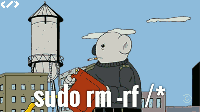

Про выигрыш и победу

Не так давно у нас был корпоратив. Основным гвоздём программы был яхтинг, а точнее даже "парусная регата". Происходило данное мероприятие недалеко от мыса "Стрелка" и КамГЭС, задача была достаточно простая - подойти к бую, на парусном вооружении, от него пройти до буя на противоположном берегу у мыса "Стрелка", обогнуть его и вернуться обратно за минимально возможное время. Всех участвующих разделили на 14 команд и распределили путём жребьёвки по семи яхтам в два захода. Я в числе прочих своих сослуживцев оказался на небольшой 27-ми футовой яхте "Family", познакомился со шкипером и его дочерью (крайне душевные ребята), сообщил, что в яхтенных походах уже бывал и мною могут располагать - отличаю гротофал от стаксель шкота, кранец от кракена, принёс две пары нормальных яхтенных перчаток и вообще, полезный малый.
Теги: жизненное
Про два года и сискуль

Много раз слышал о том, что чужие дети растут быстро, а свои ещё быстрее. И это похоже одна из тех вещей, о которых можно сто раз услышать, знать об этом, но понять - только прочувствовав на себе. Все эти "вот появятся свои, тогда поймёшь" - как ни удивительно, в большинстве своём правда.
Теги: жизненное, детёныш
История одного факапа

Послушал тут предпоследний 769-й выпуск подкаста Radio-T, в котором обсуждение технических ошибок напомнило мне примерно аналогичный случай из моей практики.
Давным давно, когда я ещё работал в xsolla, которая ещё в то время носила название 2pay, у нас по большому счёту был всего один основной сервер в Московском датацентре, на котором крутился весь мир. Передо мной стояла задача написать скрипт, который зачищает старые логи, временные файлы и прочее, что может занимать много места.
Теги: shell, админское, жизненное
Про мотивацию и удалёнку

Знакомая выложила пост, в котором попыталась для себя определить плюсы и минусы удалёнки. Вот ссылка на оригинал, ниже для простоты я приведу его полностью:
Есть боль. Людей стало еще сложнее затащить в офис - маркетологов, ит-специалистов, телемаркетологов.
А в чем кайф-то работать дома? Ты же не граничишь дом и работу, ты все время работаешь!
⠀
Какие я вижу плюсы удаленки для себя:
⠀
1. Спишь на 1 час подольше
2. Можешь сделать перерыв и выйти на улицу, чтобы подышать воздухом или пообниматься с собакой.
3. Вкусный обед дома (если он готов)
4. Не тратишь время на перемещения по встречам, все вопросы решаешь в онлайне.
Все!
⠀
Какие я вижу минусы в целом:
⠀
1. Работаешь постоянно. Время 19:00, ты вроде закончил, но устойчивое ощущение, что надо еще что-нибудь сделать.
2. Если у работодателя нет инструментов контроля и отчетности своих сотрудников, есть риск, что они прилегли в обед на час, а встали через 3, прикрываясь предлогом встреч. Ну или они поехали на встречу, заехали по магазинам...
3. Не видишь групповую динамику и результат каждого лично, не видишь эмоций, а соответственно не можешь управлять ситуацией.
4. Задачи могут растягиваться на день, когда можно было бы решить вопрос за минуту, задав его руководителю здесь и сейчас. Да, не все звонят, когда это нужно.

Ниже приведу свои комментации, отражающие другое видение ситуации:
Теги: жизненное
Про "службу безопасности Сбербанка"

Как минимум, раз в месяц, как максимум пару-тройку раз в неделю мне звонят из "службы безопасности Сбербанка". Я уже привык, я уже знаю всё наизусть и вот как обычно проходит наш диалог:
- Здравствуйте, меня зовут Дарья, я из службы безопасности Сбербанка...
- Здравствуйте, Дарья! Я хочу сыграть с вами в одну игру. Спонсор нашей сегодняшней передачи статья 159 УК РФ, часть вторая. Внимание, вопрос - что выберет прокурор:Вариант А: Штраф до трёхсот тысяч рублей.
Варинат B: Исправительные работы на срок до двух лет.
Вариант С: Заработная плата или иной доход за период до двух лет.
Вариант D: Принудительные работы сроком до пяти лет с возможным ограничением свободы на срок до одного года.
Вариант Е: Лишение свободы на срок до пяти лет с ограничением свободы на срок до одного года.
И да, уважаемая Дарья, я могу рассказать вам, как вас можно найти... Кстати, карты сбербанка у меня нет и никогда не было.
Что радует, многие дослушивают до конца, хотя кто-то сразу бросает трубку, когда диалог идёт не по сценарию и становится очевидно, что я не принял за чистую монету обращение из "службы безопасности". Спасибо огромное Дмитрию Бачило за то, что он аггрегировал нужную информацию в одном видео. Очень хотелось бы, чтобы это видео увидело как можно больше людей, начиная от ваших родных и близких (особенно пожилых) до тех, кто "работает" в этих коллцентрах сотрудниками "службы безопасности Сбербанка". Даже не буду убирать видео под кат.
Теги: жизненное
Об осторожности, китайском наплевательстве и потенциальной угрозе взрыва

Казалось бы, что может пойти не так, когда ты просто вставляешь аккумуляторы в пустой отсек, который ни к чему не подключен?
Хочу предупредить всех, что что-либо заказывает из Китая (да и не только) об осторожности и возможных последствиях. Сегодня я потерял бдительность и чуть не поплатился за это. Для своего небольшого одноплатника, управляющего умным домом, я собирался сделать блок бесперебойного питания и для этого уже давно приобрёл на алиэкспресс блок на два аккумулятора. Жаль, перед тем как выкинуть то, что от него осталось, не догадался это сфотографировать...
Вы знаете, как горит литий? Я слава богу знаю это только по видео. Кто не в курсе, вот вам наглядные эксперименты от Креосана. Помню ещё видео с камеры наблюдения, где бомбанул ноутбук, стоящий на зарядке - очень впечатляет. Одним словом - никому не пожелаю возгорания литиевого аккумулятора, особенно дома.
Теги: подгорание, жизненное
Про классический холивар

Тут пару дней назад общались в телеграме с товарищем (далее Т). И речь зашла о холиваре - мол, я вот, отщепенец/извращенец такой сижу на линуксе, а больше никому он никуда не сплющился и никто его не использует. Так смешно стало. Далее примерный диалог:
Теги: linux, жизненное
Про силиконовых монстров, агрессию, сосульки и правильные вопросы к себе

Интересно, почему подобные мысли приходят в голову именно в 4 часа ночи?
Вспомнился случай, который произошёл со мной лет около 10 назад. Стоял я в супермаркете "Семья" на Борчанинова в очереди, когда передо мной бесцеремонно вклинилась с бутылкой пива некая особа лет на пять по виду меня постарше. Спортивный костюм, бейсболка, длинные прямые чёрные волосы, ногти длиной с треть карандаша, сантиметровые ресницы и две ботексные пельмехи на том месте, где у людей обычно расположен рот. Другими словами - классический силиконовый монстр (далее СМ) с альтернативными весьма представлениями о прекрасном. Я ей сказал, что её здесь не было и попросил переместиться в конец очереди. Вежливо и спокойно попросил. Если бы она в свою очередь попросила её пропустить - без проблем, мне не жалко, но терпеть не могу людей, которые считают, что мир крутится вокруг них и им все должны. Далее между нами произошёл примерно следующий диалог:
Теги: жизненное
Мракобесие без джаза и 5G

Давно уже заметил, что статьи получаются лучше, когда то, о чём ты пишешь, тебя задевает и когда тебя переполняют эмоции. И вот, сегодня как раз такой случай.
Недавно во второй раз уже наткнулся на видео под заголовком "ОПАСНАЯ ТЕХНОЛОГИЯ 5G. Умная пыль. Для Чего На самом Деле Нужны Сети 5G?". Ссылку приводить не буду, так как youtube периодически удаляет сомнительный контент или понижает его рейтинг. Видео чаще всего из себя представляет статичную картинку, под трансляцию которой зачитывается один и тот же текст. Я приведу его здесь со своими комментариями:
Теги: жизненное
Про позитивный фидбек и мотивацию

Как-то раз ко мне подошла начальница и попросила устроить собеседование одному молодому парню, её знакомому - мол, вдруг у нас под него найдутся какие-то задачи? Дело не сложное, собеседования я проводил не раз, да и пара тестовых заданий у меня припасена была. По результатам собеседования выяснилось, что парень совсем "зелёный", опыта работы у него нет, но он кардинально отличался от большинства тех, кто ранее у меня проходил собеседования...
Теги: жизненное
О разнице в восприятии, понимании и формулировке задач

Существуют такие вещи, о которых ты знаешь на протяжении всей своей жизни, но настолько к ним привык, что сложить 2 + 2 и сделать из этого какие-то выводы просто не приходит тебе в голову. Возможно, что где-то на подсознательном уровне ты это даже учитываешь и это оказывает влияние на твоё поведение и принятие тобой решений, а потом сам не можешь понять, почему ты поступил так, а не иначе. И вот, в один прекрасный момент ты постигаешь истину. Это со мной и случилось сегодня утром.
Теги: жизненное
О традиционных свадьбах

В последние лет 10 довольно часто замечаю, что многие пары разводятся спустя год после свадьбы. Зачастую разводятся нехорошо, со скандалами и прочими спецэффектами. Недавно обсуждали в контакте эту ситуацию с одной знакомой. Ниже приведу то, что собрал в кучку из своих мыслей и реплик.
Самая дебильная стратегия - два молодых организма знакомятся, общаются (со временем всё теснее), не предохраняются, через месяц срочно женятся, при этом на свадьбу берут огромные кредиты, то ли от большого ума, то ли под давлением мамашек - "шобы как у всех было и не хуже, чем у Лариски с третьего подъезда!".
Теги: мысли-вслух, жизненное, идиоты
Про весеннее обострение

Этой весной столько всего приключилось и накопилось, что на ведение блога просто не хватало сил и времени. Постараюсь исправить это упущение и вывалю всё скопом. Скажу сразу, под обострением я в данном случае имею в виду обострение моего желания изменений, стремления к чему-то новому и избавление от чего-то старого.
Теги: жизненное, 3d-printing, moto, keyboards, smarthome
Про математический обман

Недавно моя хорошая подруга написала вот этот пост, в котором говорится о том, что многие люди не хотят считать, в том числе даже и свои средства, прикрываясь тем, что это для них сложно и вообще, они гуманитарии. Хотел бы продолжить данную тему и привести другие примеры.
Наш мозг обмануть несложно. Мозг ленив, он вообще не любит лишнюю работу и поэтому там, где считает это возможным, идёт по пути наименьшего сопротивления, чем и пользуются те же кредитные агенты и маркетологи. Пожалуй, самый наипримитивнейший способ, которым пытаются обмануть наш мозг - это ценники в магазинах. Все эти "9999" рублей, которые в представлении маркетологов на подсознательном уровне должны якобы сформировать представление о том, что цена товара не десять тысяч, а девять с чем-то. А это "что-то" видимо, следуя той же логике, должно восприниматься как нечто несущественное. Да, это самый примитивный пример и многие наверное думали об этом в ключе: "Да кто вообще на это клюёт? Это же очевидно!". Возможно, некоторым это казалось смешным в своей наивности.
Да, мы можем тихонько посмеяться над убогими, на ком срабатывают и такие нехитрые методы, мы-то сразу при подсчёте покупок округляем цены в бОльшую сторону, не правда ли? Но стОит сделать маааленький шажок в сторону, стоит чуть-чуть усложнить задачку, как сразу же мы клюём на удочку, стОит нам подсунуть нужную цифру. И жертвой вполне может стать человек, не считающий, что у него гуманитарный склад ума. Не смотря на то, что для успешного обхода большинства граблей хватит общего образования в рамках пяти классов школы. Но сначала про чуть более сложное, но тем не менее, очевидное на бытовом уровне вымогательство.
Теги: мысли-вслух, жизненное
Про ярлыки и квадратно-гнездовой способ мышления

Один мой друг натолкнул меня на мысли о "навешивании ярлыков". Что же в сущности такое - эти ярлыки и зачем их на кого-то навешивать? На мой взгляд всё очень просто. Ярлыки - это принадлежность к некоей категории или нескольким категориям. Наш мозг склонен структурировать информацию, потому что в таком виде ей легче оперировать и её легче хранить. Мозг бережёт себя от перегрузок, переходя на более высокий уровень абстракции. На этом уровне он отбрасывает массу незначительных, как ему кажется, деталей, создавая ассоциативную связь вида "Вася" -> "Урод". Для создания данной связи ему нужно, чтобы в категории "Уроды" уже находился некий индивид, скажем, "Петя", или группа индивидов, например, "Байкеры", которые имеют некие признаки или совершили некие действия подобные действиям нашего гипотетического Васи.
Теги: жизненное, мысли-вслух
Про программистов доступным языком
 Помнится, устроился я в 2004-м году на свою первую работу. Устроился в научно-исследовательскую часть Пермского Государственного Университета "программистом" на полставки, если можно так выразиться, потому как в трудовой у меня было написано мифическое "Техник третьего разряда". С полным отсутствием опыта работы и обучаясь на втором курсе в ПГУ я рассчитывать на бОльшее не мог, точнее мог, но мне это было неинтересно. Мой оклад поначалу составлял целых 600 рублей в месяц. Я мог заплатить за сотовый телефон и раза три на эти деньги посетить столовую. Почему я пошёл туда работать? На то было несколько причин. Во-первых, это было рядом: достаточно было перейти из одного корпуса в другой - и вот я на работе. Во-вторых, у меня чесались руки в отношении программирования и администрирования, мне нужен был опыт, а на работе появлялись задачи и не нужно было изобретать их самостоятельно. В-третьих, шёл стаж.
Помнится, устроился я в 2004-м году на свою первую работу. Устроился в научно-исследовательскую часть Пермского Государственного Университета "программистом" на полставки, если можно так выразиться, потому как в трудовой у меня было написано мифическое "Техник третьего разряда". С полным отсутствием опыта работы и обучаясь на втором курсе в ПГУ я рассчитывать на бОльшее не мог, точнее мог, но мне это было неинтересно. Мой оклад поначалу составлял целых 600 рублей в месяц. Я мог заплатить за сотовый телефон и раза три на эти деньги посетить столовую. Почему я пошёл туда работать? На то было несколько причин. Во-первых, это было рядом: достаточно было перейти из одного корпуса в другой - и вот я на работе. Во-вторых, у меня чесались руки в отношении программирования и администрирования, мне нужен был опыт, а на работе появлялись задачи и не нужно было изобретать их самостоятельно. В-третьих, шёл стаж.
Моя начальница якобы имела большие планы на мою деятельность, но старательно уворачивалась от любых моих вопросов и уточнений. Под предлогом "уйди мальчик, не мешай, серьёзная тётя работает".
- Какое техническое задание? Зачем вообще? Иди, пиши программки!
Теги: жизненное
Про очистку воды, вампиров, собак, ножи, цыган и наследство

Казалось бы, что общего между всеми понятиями, приведёнными в заголовке? Ответ очень прост - они все различными путями могут лишить вас денег. Интернет теперь доступен повсеместно, каждый знает, что такое google, практически у каждого человека есть возможность получить любую информацию с минимальными (я бы даже сказал минимальнейшими) усилиями. Причём не только ту информацию, которая раньше поступала из средств массовой информации и которая была доступна в библиотеках, но и ту, которую активно генерирует сам социум. Если раньше до нас доходили какие-то слухи, то сейчас любой может зайти на любой тематический форум и выложить всё, о чём он думает, описать всё, что с ним произошло и поделиться любым опытом с достаточно широким кругом лиц. Всё это индексируется поисковыми системами и доступно для поиска.
В этих условиях мне уже давно кажется крайне странной одна вещь - схемы мошенничества, которые должны были естественным путём исчезнуть, как неприносящие дохода, цветут и пахнут! Как минимум, эти схемы должны были многократно усложниться, обрасти деталями, мутировать, эволюционировать - одним словом измениться, чтобы как можно сильнее отличаться от уже известных вариантов. Но нет, они как акулы или змеи, которые не изменились за последние несколько миллионов лет - живут и здравствуют.
Теги: жизненное, мысли-вслух